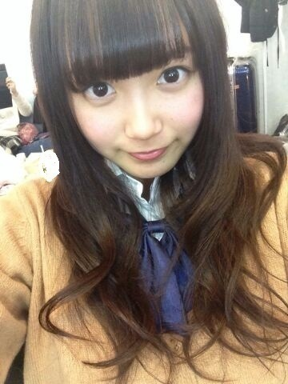

| 2014/03 16 Sun | ひめたん(*>ω<*)そ の420 |
お客様の中に整体師さんは
いらっしゃいませんか？(スチュワーデス風)
機内に腰痛で苦しんでいる方がおられます
ここに＼(^ω^)／

どうも、腰痛で苦しんでいる乗客
ひめたんですこんばんは
もう敬語の使い方が
正しいかどうかも判断できないくらい
腰が痛いです
ちょっと盛りましたごめんなさいヽ(´・ω・｀ヽ)
公式サイトで発表されました
西川七海ちゃんが3月22日をもって
乃木坂46の活動を
辞退することになりました
一緒に頑張ってきた仲間が
欠けるなんてとっても悲しいし寂しいなー
でも夢に向かって一歩踏み出すのって
かっこいいよね、ステキだなって思うの。
だからこれからもずっと応援してます！
22日まであとちょっとだけど よろしくね。
お肌が白くて、せくしーで
お姉さんって雰囲気なんだけど
フランクに話せて楽しくて弾んじゃう
ななつん らぶ！
＼ きゃっきゃうふふ ／

遊んでるんじゃないよ！
お仕事してるんだからね！
しかもこのテイク
髪が思いっきし顔にかかってて
画として成立してないね(´・ω・｀)
出来上がりはMVで☆

 どんな格好で行ったらひめたん嬉しいかな？
どんな格好で行ったらひめたん嬉しいかな？
女の子です
握手会だね！ありがとうー♪♪
ひめたんはラブリーなおにゃのこも
クールなおにゃのこもみんな好きよーうっ
だから自分のすきなお洋服でおいで？
楽しみに待ってるねっヽ(´・ω・｀ヽ)
魚、魚、魚 魚を食べると ？
頭がよくなって、身体にいいんでしょ？
そんなに楽しいおうた歌っても
お魚さんなんて嫌いなんだからね！ぷーんだ
季刊乃木坂で
ひめたんが一番好きな写真はどれですか？
インタビューページのすぐ隣のやつ。
 刑事が張り込みする時の定番は
刑事が張り込みする時の定番は
あんぱんと牛乳だよね！ひめたんには
こういう定番の組み合わせってありますか！
へーそうなんだ！初めて知った！
ちょっと違うかもしれないけど
ごはんでもパンでもなんでも
お供は烏龍茶がいい人です。
ひめたん「心太」買ってきてー
ところてんね？
悪いけどそれくらいは読めますよ？
それよりひめをパシるってどゆことー( ^ω^ )
「三和土」
っていう漢字なんだけど、ひめたん読める？
みわど......
ごめんなさい心太買ってきます。
考えても考えてもひめたんをアッと言わせる
質問がてでこない！
どんな気持ちで質問考えたらいいのかなー？
そう、これよく聞かれるの
ほんとに、何でも嬉しいんだよー♪
あまり気負わないで聞いてください∩^^∩＊
ひめたんビームの練習頻度を教えてね
練習なんてしたことないです、プロですから。
わさび入った寿司が出てきたらどうする？
えー困っちゃう。
家族や仲良しのおともだちにでも
プレゼントすると思う。
自分で食べたら ひーっ てなるからね。
ひめたんよくふわふわしてるけど
なんかコツとかあんの？
ふわふわしてないよー
きりっとしてるよ(｀・・´)きりっとな
ひめたんは、テストの点数が悪いとき、
戻ってきた答案を食べますか？ 暗記しますか？
えーそういえば過去の答案たちどこ行ったんだろう
過去は振り返らないタイプなの！
目を背けたくなるから目を背ける！
でも学生のみんなはひめたんみたいにならないで
ちゃーんと復習するんだよ？
ひめたんのブログの
コメント欄下２ケタに46を踏んだ方へ
手書きでコメ返するコーナー
＼ ひめたん46 ／

いつもコメントたくさん
ありがとうございます
本文はもちろんなんだけど
質問返しのコーナーが楽しみですって方も
たくさんいらっしゃるみたいで嬉しい♪
今日はいつもより気持ち多めだよー
それからメールのお返事を
コメントに書いてくれる方もいて
ちゃーんと届いてるんだなって(＊´ω`＊)るん
地震のあった地域のみなさん
無事だよーって報告聞いて安心しました。
花粉症のみなさん
共にがんばりましょう。
ブログってなんて偉大なんだろう。
(＊´・ω・＊)
コメント(495)
2014/03/16 23:54